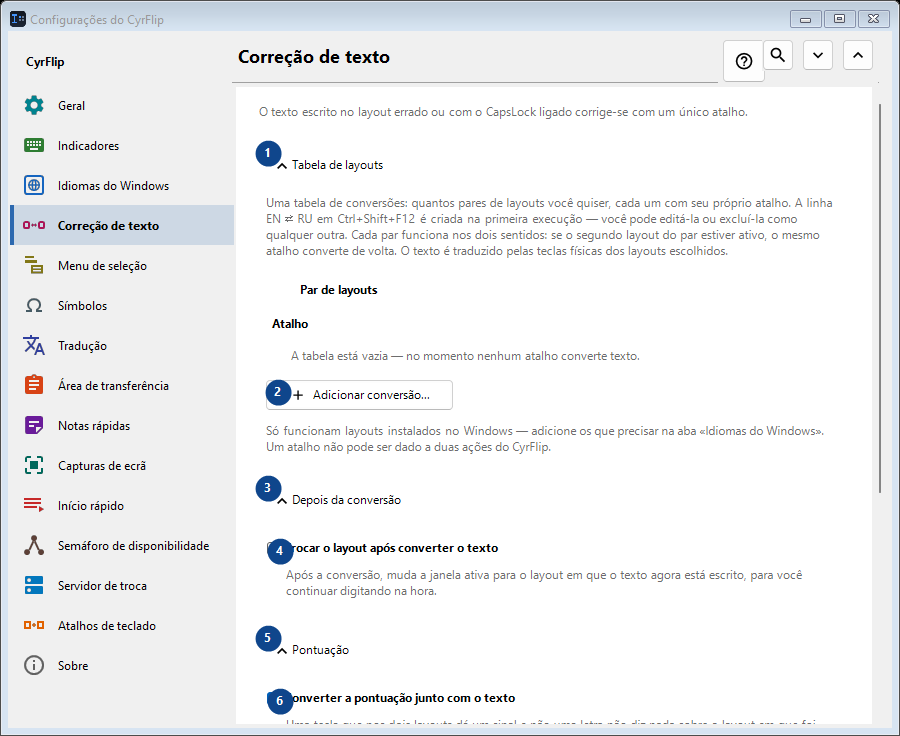
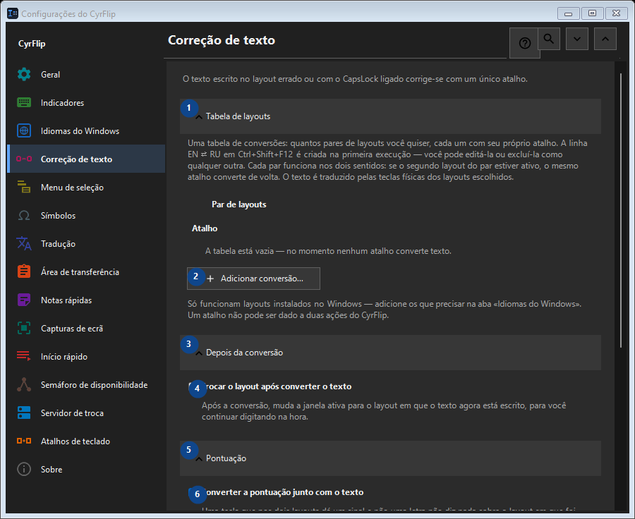

Correção de texto
Para que serve
O texto escrito no layout errado ou com o CapsLock ligado corrige-se com um único atalho.


Ordem de utilização
As definições são aplicadas de imediato. Não existe uma ordem obrigatória; use os grupos abaixo.
Elementos
1. Tabela de layouts
Use este comando para a ação indicada. Leia qualquer confirmação antes de aceitar.
Os seus atalhos2. Adicionar conversão...
Use este comando para a ação indicada. Leia qualquer confirmação antes de aceitar.
Os seus atalhos3. Depois da conversão
Use este comando para a ação indicada. Leia qualquer confirmação antes de aceitar.
Os seus atalhos4. Trocar o layout após converter o texto
Após a conversão, muda a janela ativa para o layout em que o texto agora está escrito, para você continuar digitando na hora.
Os seus atalhos5. Pontuação
Use este comando para a ação indicada. Leia qualquer confirmação antes de aceitar.
Os seus atalhos6. Converter a pontuação junto com o texto
Uma tecla que nos dois layouts dá um sinal e não uma letra não diz nada sobre o layout em que foi pressionada: atrás de «/» a tecla russa traz um ponto, e a «/» do teclado numérico é a mesma em toda parte e, no texto copiado, não se distingue da comum. Enquanto isto estiver marcado, esses sinais são convertidos junto com o texto - foi assim que o CyrFlip sempre se comportou. Desmarque se você os digita de propósito com mais frequência: «/ghbdtn» manterá então a sua barra em vez de começar com um ponto. Os sinais em cuja tecla o outro layout tem uma letra (a vírgula, os colchetes) são convertidos de qualquer forma.
Os seus atalhos7. Maiúsculas e minúsculas
Use este comando para a ação indicada. Leia qualquer confirmação antes de aceitar.
Os seus atalhos8. Corrigir CapsLock
Inverte maiúsculas e minúsculas na seleção; útil depois de ativar o CapsLock sem querer.
Os seus atalhos9. Alterar - Corrigir CapsLock
Use este comando para a ação indicada. Leia qualquer confirmação antes de aceitar.
Os seus atalhos10. Sincronizar CapsLock após corrigir maiúsculas
Altera o estado físico do CapsLock após a correção, para que as próximas teclas correspondam ao texto corrigido.
Os seus atalhos